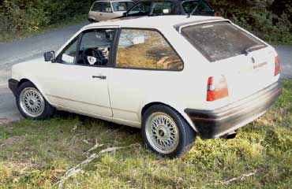

Extras
- SSD
- NSW
- ZV
Motor
- 4 Zylinder / 1,3 l G40
- geändertes Ladedrucksystem
- geändertes Ladeluftkühlsystem
Abgasanlage
- modifiziert mit 140 x 70 mm Endrohr
Bremse
- G40, VA: gelochte Zimmermann-Scheiben, HA: Trommel
Felgen / Reifen
- 6,5 x 15" BBS Mehrspeichenfelge vom Golf II "Edition One"
- 195 / 50 R15
Fahrwerk
- G40, VA: Serie, HA: Spax-Sportstoßdämpfer
- Wiechers Stahl-Streben, VA: oben/unten, HA: oben
Sonstige Umbauten
Außen
- Neulack Sommer 2003
- Kotflügel gezogen VA: 2 cm, HA: 3,5 cm
- Frontscheibe mit Grünkeil
- Chromolux-Folie in Heck- und hinteren Seitenscheiben
- NSW auf schwarze NSW umgebaut
Innen
- 32er Supersport Lenkrad
- Ladedruckanzeige in Mittelkonsole
- Pikatronik KIK 1000 Alarmanlage
Motorraum
- Ventildeckel vom 1,3 l (55 PS) zur Kurbelwellengehäuse-Entlüftung
Musikanlage
- JVC KD-LH 8R CD-Radio
- Rodek 4-Kanal
- Visonic 4-Kanal
- Doorboards mit Spectron / Emphaser System
- Heck: Axton Soundboard
- Basskiste mit 30er Emphaser Extreme
- ACR-Powercap mit Digitalanzeige
Kontakt
simon@vwclubms.de